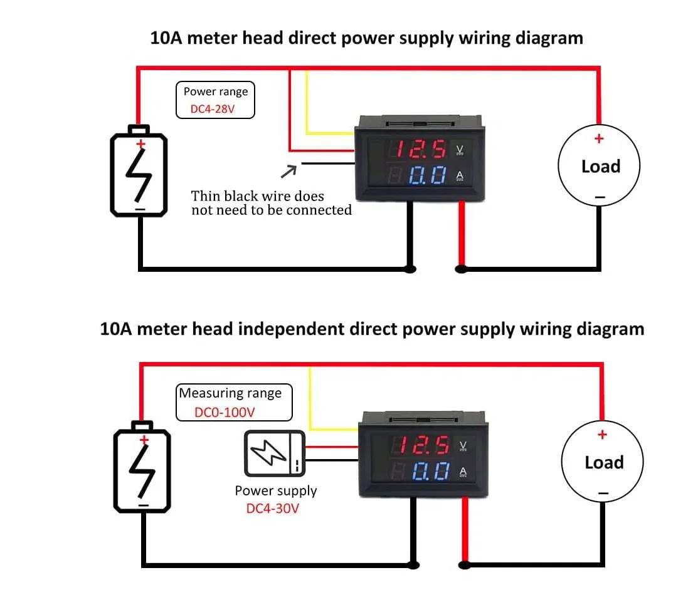

📙 デジタル電圧電流計の繋ぎ方¶
2026/11/27公開 2026/11/27更新
質問者: Shigeru Morifuku
回答者: Claude Opus 5.5
回答日: 2026/11/25
免責: 回答者は AI であり、間違えることがあります。

Q: 🟩 この図を説明して¶
これは、電圧と電流を同時に表示する、よくある「DC 0〜100V／10A デジタル電圧電流計」の結線図です。電流計は内部のシャント抵抗で測る方式で、マイナス側（ローサイド）に入れます。
🟨 配線の役割¶
線 |
役割 |
|---|---|
細い赤 |
メーター自身の電源＋ |
細い黒 |
メーター自身の電源−（内部で太い黒とつながっている） |
細い黄 |
電圧測定の入力（測りたい電圧の＋につなぐ） |
太い黒 |
電流測定の入力（電源の−につなぐ） |
太い赤 |
電流測定の出力（負荷の−につなぐ） |
電流の流れは、電源− → 太い黒 → 内部シャント → 太い赤 → 負荷− の順です。負荷の＋は電源の＋に直接つなぎます。
🟨 上の図：測定対象から電源を取る方式（電源共用）¶
細い赤と黄色の両方を、バッテリー＋につなぎます。
太い黒がバッテリー−につながっているので、メーターのGNDはそこから内部で取れます。そのため細い黒はつながなくて構いません（図の「Thin black wire does not need to be connected」）。
メーターが測定対象の電圧で動くので、測れる電圧は動作電圧の範囲 DC4〜28V に限られます。4V未満ではメーターが動きません。
配線が少なくて済むので、12Vや24Vのバッテリーを監視するときの定番の使い方です。
🟨 下の図：独立電源で動かす方式¶
細い赤と細い黒は、別に用意した DC4〜30V の電源（ACアダプターなど）につなぎます。
黄色だけをバッテリー＋につなぎます。
メーターの電源と測定対象が別になるので、0〜100V の全範囲を測れます。4V以下の低い電圧も測れます。
🟨 注意点¶
細い黒と太い黒は内部で導通しています。 下の図の方式では、外部電源の−が測定回路の−と共通になります。外部電源は絶縁型（普通のACアダプターなど）を使ってください。−側の電位が違う電源を使うと短絡の原因になります。
細い黒を負荷側（太い赤の先）につながないでください。 シャントを通らない経路ができるので、電流の値が正しく出なくなります。
太い赤と太い黒を逆にしないでください。 電流が表示されなかったり、マイナスの値になったりします。太線は10Aに耐えられる太さのまま配線してください。
ローサイド測定なので、負荷の−はシャントの電圧降下ぶんだけGNDから少し浮きます。負荷の−を別の経路でGNDに落とすと、シャントを通らない経路ができて電流を測れなくなります。
裏面に電圧と電流の校正用の半固定抵抗が付いている製品が多いので、テスターと比べてずれていれば調整できます。
同じ見た目でも、線の色や動作電圧が違う版があります。実際に結線する前に、手元の製品のラベルや説明書で確認してください。